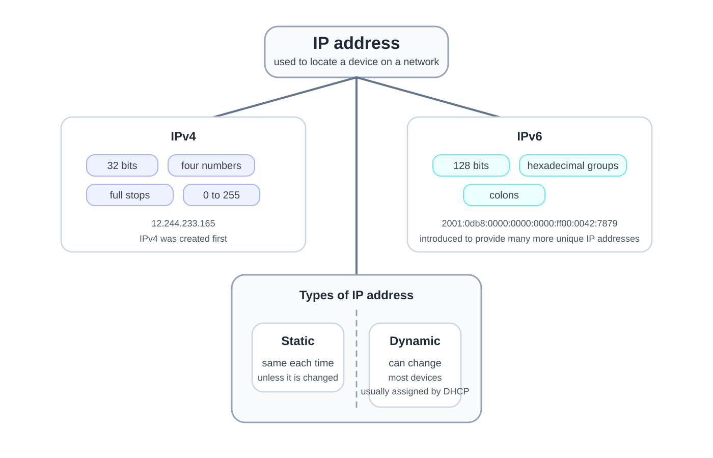

3.4 Network hardware
Computer Science IGCSE notes, prepared by Dr. Hamdeni
3.4a: Network interface card (NIC) and MAC address at manufacture
- A network interface card (NIC) is required for a device to connect to a network; it stores a media access control (MAC) address assigned at manufacture.
- A NIC can be wired or wireless.
- It establishes the physical connection and transmits and receives data.
- It converts between network data and computer-readable data.
- The network card (NIC) connects your device to the network, so the router or internet service provider (ISP) can assign it an IP address.
- Data sent on the network includes the device MAC address so the sender can be identified.
- Wireless NIC: a laptop uses a wireless network interface card to connect to a home network without a cable.
- Think of the NIC as your device’s network passport. It carries your identity (the MAC address) and lets you enter the network.
3.4b: Media access control (MAC) address and its structure
- A media access control (MAC) address uniquely identifies a device and is assigned by the manufacturer.
- Structure: the address contains a manufacturer code and a device serial code.
- Format: six pairs written in hexadecimal, separated by colons or dashes.
- Length: a MAC address is 48 bits long, which equals twelve hexadecimal digits.
- Property: a MAC address is normally unchanged, known as a universally administered address (UAA), but it can be altered in some cases using a locally administered address (LAA).
- Example MAC: 34:4D:EA:89:75:B2 shows six hexadecimal pairs separated by colons.
3.4c: Internet protocol (IP) address; types; IPv4 vs IPv6
- An internet protocol (IP) address is used to locate a device on a network and is allocated by the network.
- IPv4 uses 32 bits and is written as four numbers separated by full stops; IPv6 uses 128 bits and is written in hexadecimal groups separated by colons.
- IPv4 was created first, but as more devices connected to networks, the number of available IPv4 addresses decreased.
- IPv6 was introduced to provide many more unique IP addresses.
- IP addresses can be static or dynamic.
- Most devices are assigned a dynamic IP address.
- A dynamic IP address can change each time the device connects to the network.
- A static IP address stays the same each time the device connects to the network unless it is changed.
- Dynamic IP addresses are usually assigned automatically using Dynamic Host Configuration Protocol (DHCP).
- IPv4 number range: each of the four numbers is from 0 to 255.
- IPv4 12.244.233.165 uses four numbers with full stops; IPv6 2001:0db8:0000:0000:0000:ff00:0042:7879 uses hexadecimal groups with colons.
- Valid IPv4 selection: among 110:255:2:1, 1.30.2FF.A9, 3.162.74.3, and 8.0.257.6.8, only 3.162.74.3 is valid because each section must be a number from 0 to 255 and the format must contain exactly four numbers separated by full stops.
- IPv4 validity check: 10.245.3.99 has four numbers separated by full stops and each number is between 0 and 255, so it is valid.
- Static IP in practice: a website server may use a static IPv4 address so users can always reach the same address.
- Dynamic IP in practice: when a device joins a network, DHCP can automatically assign it a dynamic IP address.

- An IP address is like where you live. Static IP is a fixed home address, dynamic IP is a hotel room that can change the next time you visit.
3.4d: Role of a router in a network
- A router is a network device used to connect different networks together. Its main role is to allow data to travel from one network to another rather than only within a single network.
- In a typical network, a router is used to connect a LAN to a WAN or to the internet. This allows users on the local network to communicate with devices and servers outside their own network.
- The router receives data packets from one network and then forwards them to another network. This means it acts as the device responsible for passing data between separate networks.
- A router routes or directs packets to the correct destination. It checks where the packet needs to go and sends it in the right direction.
- To do this, the router uses the destination IP address in the packet. The IP address helps the router decide which network the packet should be sent to.
- The router can also select the best or most appropriate route for the packet to travel. This helps make sure the data reaches the correct destination efficiently.
- Example: in a home network, the router connects the LAN to the internet and forwards packets to websites and servers on other networks.